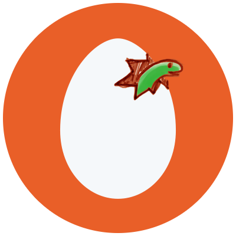

Loop Better
a deeper look at iteration in Python

Weekly Python Chat live webcast host
Assumptions
- You know how to use
forloops in Python - You're not already familiar with iterators and the iterator protocol
Definitions
- iterable: anything you can loop over
- sequence: ordered iterable, indexable (starting at 0)
- iterator: magical objects that make looping possible
- __dunder__: method used for operator overloading
Our Goals
- Loop over an iterable without using a
forloop - Discuss
iteratorsand why they matter - Discover the the iterator protocol: the secret to troubleshooting odd iteration issues in Python
Looping Problems
Looping Twice
>>> numbers = [1, 2, 3, 5, 7]
>>> squares = (n**2 for n in numbers)
>>> squares
<generator object <genexpr> at 0x7efefd57c3b8>
>>> tuple(squares)
(1, 2, 3, 5, 7)
>>> sum(squares)
0
>>> tuple(squares)
()
Looping Twice
>>> names = ['Kayla', 'Daniel', 'Charlotte', 'Benjamin']
>>> indexed_names = enumerate(names)
>>> enumerate
<enumerate object at 0x7efefc06d9d8>
>>> list(indexed_names)
[(0, 'Kayla'), (1, 'Daniel'), (2, 'Charlotte'), (3, 'Benjamin')]
>>> list(indexed_names)
[]
Containment Checking
>>> numbers = [1, 2, 3, 5, 7]
>>> squares = (n**2 for n in numbers)
>>> 9 in squares
True
>>> 9 in squares
False
Review: Loops
Python while loop
numbers = [1, 2, 3, 5, 7]
i = 0
while i < len(numbers):
print(numbers[i])
i += 1
1
2
3
5
7
C-style for loop
let numbers = [1, 2, 3, 5, 7];
for (let i = 0; i < numbers.length; i += 1) {
print(numbers[i])
}
1
2
3
5
7
Python for loop
numbers = [1, 2, 3, 5, 7]
for n in numbers:
print(n)
1
2
3
5
7
Review: Iterables
Iterables
for item in some_iterable:
print(item)
Sequences
>>> numbers = [1, 2, 3, 5, 7]
>>> coordinates = (4, 5, 7)
>>> words = "hello there"
>>> numbers[0]
1
>>> coordinates[2]
7
>>> words[4]
'o'
Other iterables
>>> my_set = {1, 2, 3}
>>> my_dict = {'k1': 'v1', 'k2': 'v2'}
>>> my_file = open('some_file.txt')
>>> squares = (n**2 for n in my_set)
>>> from itertools import count
>>> c = count()
Looping without a for loop
Looping with indexes
numbers = [1, 2, 3, 5, 7]
i = 0
while i < len(numbers):
print(numbers[i])
1
2
3
5
7
Looping manually on a set
fruits = {'lemon', 'apple', 'orange', 'watermelon'}
i = 0
while i < len(fruits):
print(fruits[i])
Traceback (most recent call last):
File "<stdin>", line 2, in <module>
TypeError: 'set' object does not support indexing
Iterators
Iterables can give you iterators
>>> numbers = [1, 2, 3, 5, 7]
>>> coordinates = (4, 5, 7)
>>> words = "hello there"
>>> iter(numbers)
<list_iterator object at 0x7f2b9271c860>
>>> iter(coordinates)
<tuple_iterator object at 0x7f2b9271ce80>
>>> iter(words)
<str_iterator object at 0x7f2b9271c860>
Iterators can give the next item
>>> numbers = [1, 2, 3]
>>> iterator = iter(numbers)
>>> next(iterator)
1
>>> next(iterator)
2
>>> next(iterator)
3
>>> next(iterator)
Traceback (most recent call last):
File "<stdin>", line 1, in <module>
StopIteration
Looping manually: for real
Looping with a for loop
def funky_for_loop(iterable, action_to_do):
for item in iterable:
action_to_do(item)
Looping without a for loop
def funky_for_loop(iterable, action_to_do):
iterator = iter(iterable)
done_looping = False
while not done_looping:
try:
item = next(iterator)
except StopIteration:
done_looping = True
else:
action_to_do(item)
The Iterator Protocol
The Iterator Protocol
for n in numbers:
print(n)
x, y, z = coordinates
a, b, *rest = numbers
print(*numbers)
unique_numbers = set(numbers)
Iterables: Our Perspective
- You can loop over any iterable with a
forloop - Anything you can loop over with a
forloop is an iterable
Iterables: Python's Perspective
def is_iterable(thing):
try:
iter(thing)
except TypeError:
return False
else:
return True
>>> is_iterable([1, 2, 3])
True
>>> is_iterable(4)
False
Iterators
>>> numbers = [1, 2, 3]
>>> iterator = iter(numbers)
>>> print(next(iterator))
1
>>> print(next(iterator))
2
>>> print(next(iterator))
3
>>> print(next(iterator))
StopIteration
Iterators are everywhere
Iterators are everywhere
>>> letters = ['a', 'b']
>>> e = enumerate(letters)
>>> e
<enumerate object at 0x7f2b92746d80>
>>> z = zip(numbers)
>>> z
<zip object at 0x7f2b92e2f3c8>
>>> r = reversed(numbers)
>>> r
<list_reverseiterator object at 0x7f2b92e702e8>
>>> next(e)
(0, 'a')
enumerate is an iterator
>>> letters = ['a', 'b']
>>> e = enumerate(letters)
>>> e
<enumerate object at 0x7f2b92746d80>
>>> next(e)
(0, 'a')
>>> next(e)
(1, 'b')
>>> next(e)
StopIteration
Files are iterators
>>> f = open('hello.txt')
>>> f
<_io.TextIOWrapper name='hello.txt' mode='r' encoding='UTF-8'>
>>> next(f)
'hello world\n'
Generators
>>> numbers = [1, 2, 3, 5]
>>> squares = (n**2 for n in numbers)
>>> next(squares)
1
>>> next(squares)
4
>>> next(squares)
9
>>> next(squares)
25
>>> next(squares)
StopIteration
I lied
Iterators are iterables
>>> numbers = [1, 2, 3]
>>> iterator = iter(numbers)
>>> iterator2 = iter(iterator)
>>> iterator2
<listiterator object at 0x7f92db9bf350>
Iterators are their own iterators
>>> numbers = [1, 2, 3]
>>> iterator = iter(numbers)
>>> iterator2 = iter(iterator)
>>> iterator is iterator2
TrueIterators are their own iterators
def is_iterator(iterable):
return iter(iterable) is iterable
Iterators are single-purposed
>>> numbers = [1, 2, 3, 5, 7]
>>> iterator = iter(numbers)
>>> len(iterator)
TypeError: object of type 'list_iterator' has no len()
>>> iterator[0]
TypeError: 'list_iterator' object is not subscriptable
>>> next(iterator)
1
>>> list(iterator)
[2, 3, 5, 7]
>>> list(iterator)
[]
The truth
| Object | Iterable? | Iterator? |
|---|---|---|
| Iterable | ✔️ | ❓ |
| Iterator | ✔️ | ✔️ |
| Generator | ✔️ | ✔️ |
| Files | ✔️ | ✔️ |
| List | ✔️ | ❌ |
What isn't an iterator?
range
>>> numbers = range(1, 5)
>>> iter(numbers)
<range_iterator object at 0x7f5aef85e450>
>>> iter(numbers) is numbers
False
>>> next(numbers)
Traceback (most recent call last):
File "<stdin>", line 1, in <module>
TypeError: 'range' object is not an iterator
>>> list(numbers)
[1, 2, 3, 4]
>>> list(numbers)
[1, 2, 3, 4]
Django QuerySet
>>> from django.db import connection
>>> books = Book.objects.all()
>>> next(books)
Traceback (most recent call last):
File "<console>", line 1, in <module>
TypeError: 'QuerySet' object is not an iterator
>>> connection.queries
[]
>>> iter(books)
>>> connection.queries
[{'sql': 'SELECT "books_book"."id", "books_book"."title", "books_book"."publisher_id", "books_book"."publication_date", "books_book"."num_pages" FROM "books_book"', 'time': '0.001'}]
>>> iter(books) is books
False
QuerySet.iterator()
>>> books = Book.objects.all()
>>> book_iterator = books.iterator()
>>> book_iterator
<generator object ModelIterable.__iter__ at 0x7f937e057678>
>>> len(book_iterator)
Traceback (most recent call last):
File "<console>", line 1, in <module>
TypeError: 'generator' object has no len()
>>> next(book_iterator)
<Book: The Art of Asking>
>>> list(book_iterator)
[<Book: Success and Luck>, <Book: Just Mercy>]
>>> list(book_iterator)
[]
Creating Your Own Iterators
Creating iterables
class AlwaysOne:
def __iter__(self):
return iter([1]) # Return list iterator (cheating a bit)
>>> one = AlwaysOne()
>>> iter(one)
<list_iterator object at 0x7f749ebe3048>
>>> for item in one:
... print(item)
...
1
>>> list(one)
[1]
>>> list(one)
[1]
Creating iterators
class OnlyOne:
def __next__(self):
return 1
def __iter__(self):
return self
>>> one = OnlyOne()
>>> iter(one) is one
True
>>> next(one)
1
>>> next(one)
1
>>> for item in one:
... print(item)
...
1
1
1
Generators: easy iterators
def only_one():
while True:
yield 1
>>> one = only_one()
>>> next(one)
1
>>> next(one)
1
>>> for item in one:
... print(item)
...
1
1
1
Generators: easy iterators
class count:
def __init__(self):
self.number = 0
def __next__(self):
number = self.number
self.number += 1
return number
def __iter__(self):
return self
def count():
number = 0
while True:
yield number
number += 1
Generator expressions
def square_all(numbers):
for n in numbers:
yield n**2
def square_all(numbers):
return (n**2 for n in numbers)
Interesting Iterator Idiosyncrasies
Exhausted
>>> numbers = [1, 2, 3, 5, 7]
>>> squares = (n**2 for n in numbers)
>>> tuple(squares)
(1, 2, 3, 5, 7)
>>> sum(squares)
0
>>> tuple(squares)
()
Partially-Consumed
>>> numbers = [1, 2, 3, 5, 7]
>>> squares = (n**2 for n in numbers)
>>> next(e)
1
>>> next(e)
2
>>> list(e)
[3, 5, 7]
Partially-Consumed
Containment
>>> numbers = [1, 2, 3, 5, 7]
>>> squares = (n**2 for n in numbers)
>>> 9 in squares
True
>>> 9 in squares
False
>>> squares = (n**2 for n in numbers)
>>> 9 in squares
True
>>> list(squares)
[25, 49]
Multiple iterators
>>> numbers = [1, 2, 3, 5, 7]
>>> i1 = iter(numbers)
>>> i2 = iter(numbers)
>>> next(i1)
1
>>> next(i1)
2
>>> next(i2)
1
>>> next(i1)
3
Multiple iterators
>>> numbers = [1, 2, 3, 5, 7]
>>> squares = (n**2 for n in numbers)
>>> i1 = iter(squares)
>>> i2 = iter(squares)
>>> next(i1)
1
>>> next(i1)
4
>>> next(i2)
9
>>> squares is i1 is i2
True
Partially-Consumed
>>> from itertools import takewhile
>>> def less_than_ten(n): return n < 10
>>> numbers = [1, 2, 3, 5, 7]
>>> squares = (n**2 for n in numbers)
>>> x = takewhile(less_than_ten, squares)
>>> next(squares)
1
>>> list(x)
[4, 9]
>>> list(squares)
[49]
Duck Typing
Duck Typing
>>> isinstance(animal, Duck) # Don't do this
True
>>> animal.swim()
Look at me swim
>>> animal.quack()
Quack!
Looping twice
def math_range(iterable):
return max(iterable) - min(iterable)
>>> numbers = [1, 2, 3, 5, 7]
>>> squares = (n**2 for n in numbers)
>>> math_range(numbers)
6
>>> math_range(squares)
ValueError: min() arg is an empty sequence
Checking lengths
def mean(iterable):
return sum(iterable)/len(iterable)
>>> numbers = [1, 2, 3, 5, 7]
>>> squares = (n**2 for n in numbers)
>>> mean(numbers)
3.6
>>> mean(squares)
TypeError: object of type 'generator' has no len()
Indexing and slicing
def last_three(iterable):
return iterable[-3:]
>>> numbers = [1, 2, 3, 5, 7]
>>> squares = (n**2 for n in numbers)
>>> last_three(numbers)
[3, 5, 7]
>>> last_three(squares)
TypeError: 'generator' object is not subscriptable
Quacking like an iterator
def math_range(iterable):
"""Return difference between max and min in given iterable."""
minimum = maximum = next(iter(iterable))
for item in iterable:
if item < minimum:
minimum = item
if item > maximum:
maximum = item
return maximum - minimum
def math_range(sequence):
"""Return difference between max and min in given sequence."""
return max(sequence) - min(sequence)
Remember
- Iterators are the least featureful form of iterables
- Default to assuming your iterables are iterators
- Don't say "iterable" when you mean "sequence"
- Embrace the iterator protocol
Final
Technical trainer
http://truthful.technology